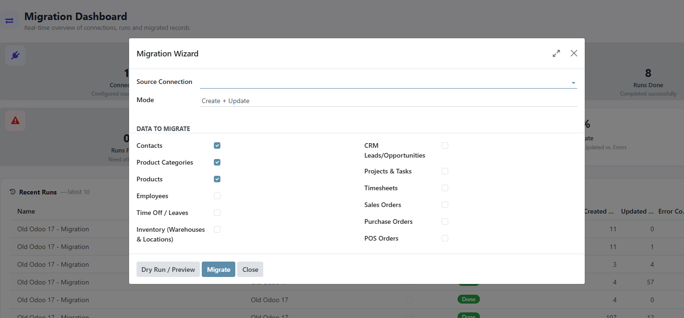
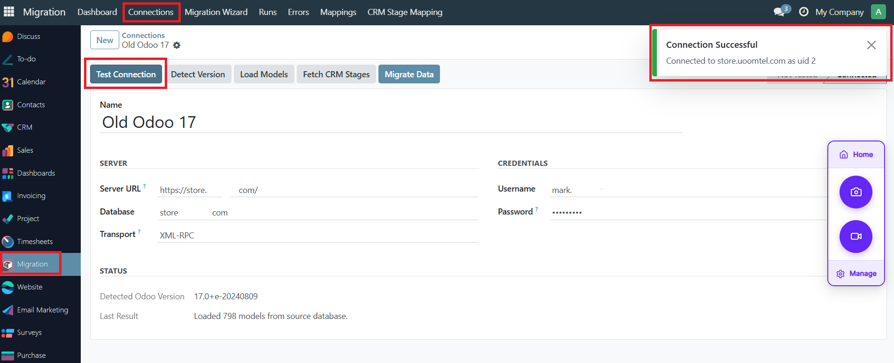
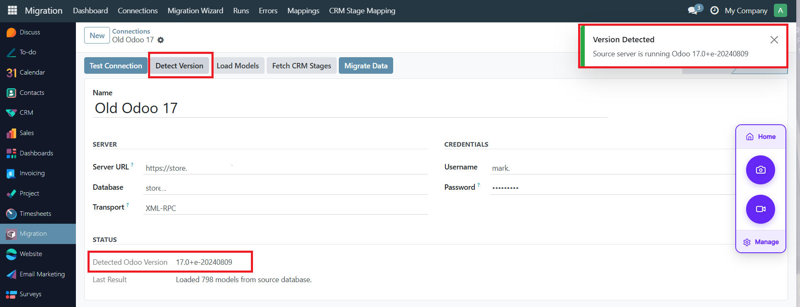
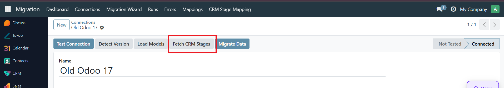
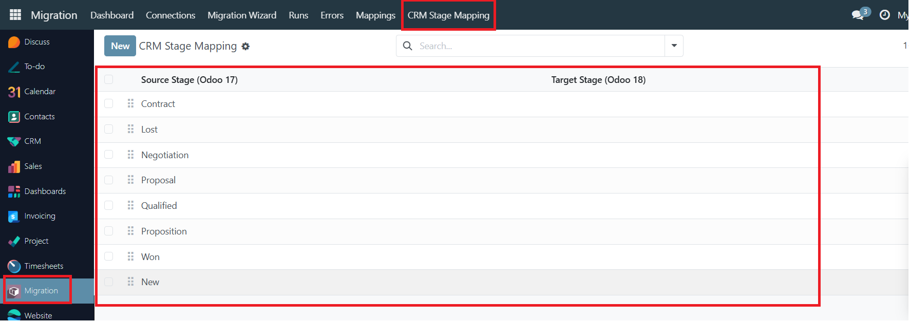

Complete Demo Video
Connect two Odoo databases and safely analyze, map, preview, migrate and verify your business data - including cross-version migration into Odoo 18.
Migrating from an old Odoo database (Community or Enterprise) to a new one is normally a painful mix of OpenUpgrade, CSV export/import, and one-off developer scripts. Odoo Data Migration & Sync replaces that with a guided, repeatable workflow: Connect - Analyze - Select - Map - Preview - Migrate - Verify.
Important: This is a data migration and synchronization tool, not a one-click full Odoo database upgrade. It migrates configured business data where compatible target models and fields exist - it does not automatically convert custom module Python/XML/JavaScript code. Target-compatible modules must already be installed on the target database before their data can be migrated.

This is the Odoo 18 edition of the connector - install it on your Odoo 18 (Community or Enterprise) database as the target, then connect it to any of these source versions:
Connect, Select Data, Dry Run / Preview, Migrate, Verify - a clear step-by-step flow for technical and non-technical users alike.
See exact create / update / skip / error counts before a single record is written to your target database.
Source/target record mapping plus configurable business-key matching (email, VAT, ref, barcode...) - re-running a migration never creates duplicates.
Companies, Contacts, Categories, Products before Sales/Purchase Orders - with automatic missing-dependency retries across multiple passes.
Every record's outcome is logged with model, source ID, and error/missing-dependency detail - failed records can be retried individually with one click.
Post-migration report re-checks the source count against what's actually mapped in the target - Ready / Warning / Blocked per model.
Connections, total runs, success rate, and records created/updated/failed at a glance.
Fetch the source CRM stages and map each one to a target stage before migrating leads - opportunities land in the right Kanban column.





Possible Causes:
Solutions:
This means the record refers to something (a Contact, Product, Category...) that hasn't been migrated yet on this connection.
Solution: Migrate the missing data type first (e.g. Contacts before Sales Orders), then use Migration → Errors → Retry on the failed lines.
Check: Has Fetch CRM Stages been run, and has every relevant stage been mapped in Migration → CRM Stage Mapping? An unmapped stage leaves the lead on the target's default stage.
Check: Does a POS Shop with the exact same name already exist and is it fully configured on the target? Orders for an unmatched shop are skipped with a clear error rather than silently dropped.